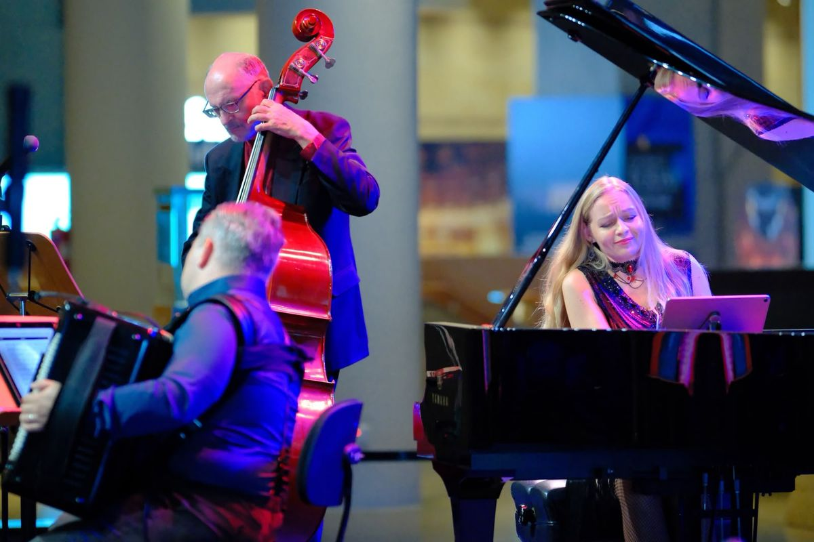

Trio de Tango
Piazzolla, in der Lautstärke, die er gemeint hat.
Akkordeon, Kontrabass und Klavier. Aleks Farseev, Guennadi Mouzyka und Kseniia Vokhmianina spielen Tango so, wie er geschrieben wurde — dicht, laut da, wo es laut sein muss, und in der Mitte so leise, dass ein Saal mit zweihundert Leuten aufhört zu reden. Entstanden in den Cafés und Bars von Buenos Aires, von Gardel und Piazzolla in die Welt getragen und seit 2009 auf der UNESCO-Liste des immateriellen Kulturerbes.

Aus dem Konzert
Crossing Borders
Standbilder aus dem Programm — der ganze Auftritt läuft oben. Das Programm führt vom frühen Tango canción Gardels bis zu Piazzollas Nuevo Tango, wobei der Bass die Walking-Linie trägt und das Akkordeon die Stimme des Bandoneons übernimmt.



Das Trio
Wer spielt
 Aleks Farseev
Aleks Farseev
Akkordeon & Bajan. In Russland geboren und ausgebildet; Gründer der Gemeinschaft von Accordion Singapore und mehrfacher Preisträger internationaler Wettbewerbe. Er hat die kostenlose Accordion Score Library aufgebaut und pflegt sie. Guennadi Mouzyka
Guennadi Mouzyka
Kontrabass. Seit 1992 Solokontrabassist des Singapore Symphony Orchestra und Mitglied der Artist Faculty des Yong Siew Toh Conservatory. Abschluss mit Auszeichnung am Moskauer Staatlichen Tschaikowski-Konservatorium; hat mit dem Yo-Yo Ma Silk Road Ensemble und dem T’ang Quartet gespielt. Kseniia Vokhmianina
Kseniia Vokhmianina
Klavier. Für ihre “Kunstfertigkeit höchsten Ranges” gerühmt, hat die vielfach ausgezeichnete Pianistin Kseniia Vokhmianina das Publikum auf mehreren Kontinenten in ihren Bann gezogen — in Häusern vom Seoul Arts Centre über das Mendelssohn-Haus Leipzig bis zum Pablo-Casals-Festival in Frankreich. Als engagierte Mentorin ist sie Music Programme Director und Klavierlehrerin an der Madison Academy of Music, nach acht Jahren an der Music Faculty der School of the Arts, und gibt weltweit Meisterkurse.

Das Trio buchen
Programme von 30, 45 oder 60 Minuten. Drinnen akustisch bis etwa 150 Gäste; für alles Größere oder im Freien bringen wir unsere eigene Verstärkung mit. Schicken Sie Datum, Ort und ungefähre Gästezahl, und Sie bekommen ein klares Ja oder Nein mit Honorar — keine Broschüre.